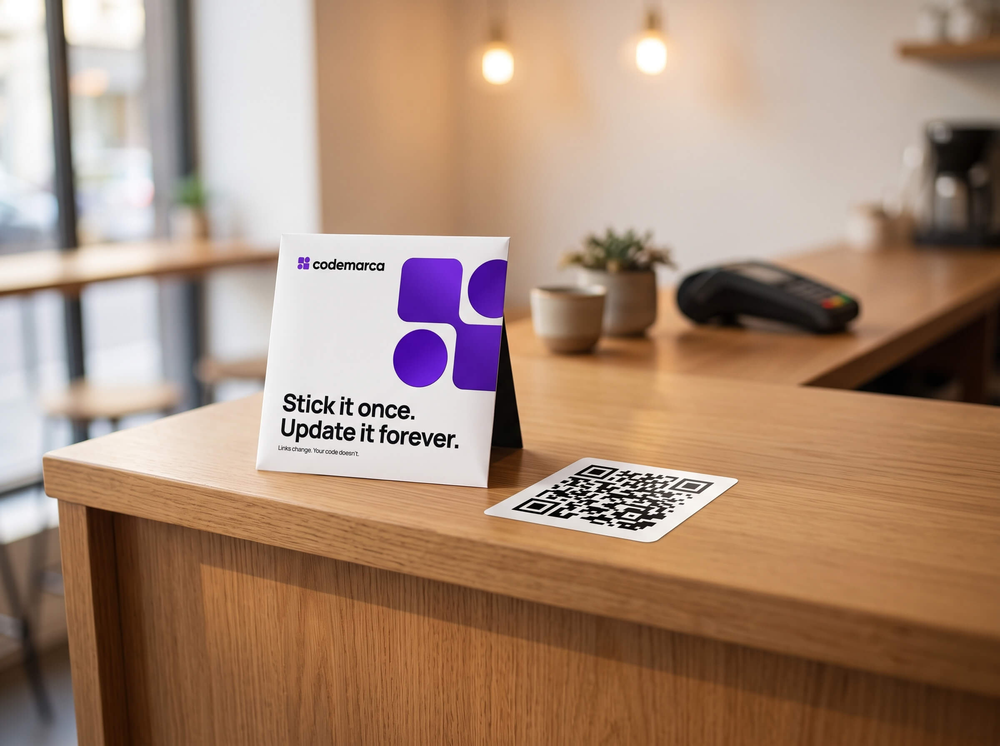

My QR
Made when your page went live, and yours for good. Nothing is printed yet — but the square already works anywhere you can put a picture.
Made when your page went live, and yours for good. It already works — the stickers on their way carry this exact square.
Tap to show it full screen
codemarca.com/garry
Your page is live
Sticker scans and your link both open it
Get it on things.
A 4″ sticker for the car, bike or shutter and a 1.5″ for a laptop, bottle or phone case — both printed with this exact code. The pack is free; you only pay delivery.


Printed on
Active